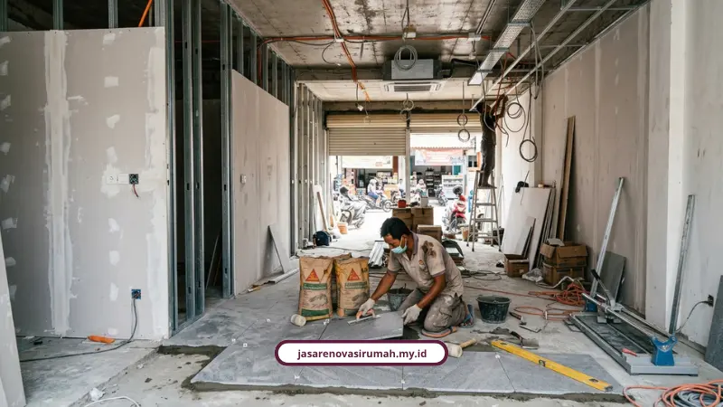

Jasa renovasi ruko dari kami mencakup fit-out interior dan perbaikan fasad komersial dalam satu paket kerja bergaransi. RAB disusun transparan sejak awal supaya renovasi tidak mengganggu operasional usaha Anda.
Ruko yang berumur di atas lima tahun biasanya mulai bermasalah. Bukan cuma soal tampilan, tapi juga fungsi bangunan. Dinding retak, dak beton rembes, lantai keropos, sampai instalasi listrik dan perpipaan yang sudah tua adalah masalah umum.
Di sisi bisnis, fasad yang kusam kurang menarik minat konsumen, tata ruang yang kaku bikin display produk terbatas, dan sirkulasi udara yang pengap jadi masalah tersendiri di iklim tropis Surabaya.
Kenapa Ruko Lama di Surabaya Perlu Direnovasi?
Ruko yang berumur di atas lima tahun biasanya mulai bermasalah. Bukan cuma soal tampilan, tapi juga fungsi bangunan.
Dinding retak, dak beton rembes, lantai keropos, sampai instalasi listrik dan perpipaan yang sudah tua adalah masalah umum. Di sisi bisnis, fasad yang kusam kurang menarik minat konsumen, tata ruang yang kaku bikin display produk terbatas, dan sirkulasi udara yang pengap jadi masalah tersendiri di iklim tropis Surabaya.
Kalau dibiarkan, dampaknya bukan cuma estetika, tapi juga omzet dan nilai sewa properti. Ini kenapa jasa renovasi ruko yang tepat sasaran jadi investasi, bukan sekadar biaya.
Apa Keunggulan Jasa Renovasi Ruko dari Kami?
Kami menangani renovasi ruko dengan pendekatan yang sama seriusnya dengan renovasi rumah tinggal. Beberapa poin pentingnya:
- Pengalaman lebih dari 12 tahun di bidang arsitektur dan konstruksi dengan 150+ proyek selesai dan kepuasan klien 98 persen.
- Solusi satu atap mulai dari jasa arsitek, kontraktor bangunan/ruko, renovasi total maupun parsial, sampai desain interior custom.
- RAB transparan yang dihitung rinci sejak awal untuk mencegah biaya membengkak di tengah jalan.
- Garansi resmi untuk pemeliharaan dan struktur pekerjaan.
- Konsultasi dan survei lokasi 100 persen gratis.
Kalau kebetulan Anda juga sedang mempertimbangkan renovasi hunian pribadi, kami juga melayani jasa kontraktor renovasi Surabaya untuk rumah tinggal dengan sistem kerja yang sama transparannya.
Bagaimana Panduan Fit-Out Interior Ruko yang Fungsional?
Fit-out interior yang baik dimulai dari tata ruang yang fleksibel. Kami biasanya mengarahkan pada konsep open-plan dengan bentang kolom lebar dan partisi non-permanen, supaya layout dan display produk mudah disesuaikan kapan saja.
Soal pencahayaan dan sirkulasi udara, penggunaan skylight, jendela atas, serta exhaust fan atau blower industri terbukti membantu menghemat listrik sekaligus menjaga udara tetap segar.
Berikut gambaran biaya material fit-out yang bisa jadi acuan:
- Partisi gypsum: Rp200.000 sampai Rp400.000 per m2.
- Partisi kaca aluminium: Rp500.000 sampai Rp1.200.000 per m2.
- Lantai keramik standar: Rp150.000 sampai Rp250.000 per m2, granit 60x60 Rp300.000 sampai Rp700.000 per m2, lantai vinyl Rp200.000 sampai Rp400.000 per m2.
- Pengecatan dinding dan plafon: cat standar Rp35.000 sampai Rp50.000 per m2, cat premium Rp60.000 sampai Rp100.000 per m2.
- Instalasi listrik baru Rp100.000 sampai Rp300.000 per titik, plumbing Rp500.000 sampai Rp1.500.000 per titik.
- Furniture custom: kitchen set HPL Rp2,5 juta sampai Rp4,5 juta per meter lari, Duco Rp4 juta sampai Rp7 juta per meter lari, wardrobe HPL Rp2 juta sampai Rp3,5 juta per m2.

Bagaimana Cara Memperbaiki Fasad Ruko agar Terlihat Modern?
Fasad adalah wajah pertama yang dilihat calon pelanggan. Tren fasad modern di Surabaya mengarah ke penggunaan kaca curtain wall atau kaca tempered untuk meningkatkan visibilitas display toko dari jalan raya.
Material fasad ringan dan tahan cuaca yang umum dipakai antara lain Aluminium Composite Panel (ACP), secondary skin roster, panel WPC, cat anti-UV, dan pintu harmonika atau folding gate.
Untuk masalah rembesan air di dak beton, kami biasanya menerapkan sistem waterproofing memakai liquid applied waterproofing berbahan PU/akrilik atau membran bakar untuk hasil yang lebih permanen.
Ir. Budi Santoso, arsitek properti komersial, menekankan bahwa renovasi ruko bukan hanya soal mempercantik bangunan, tapi juga meningkatkan daya tarik usaha, sehingga pemilik bisa mendapatkan return of investment yang lebih cepat lewat desain fasad modern dan interior fungsional.
Berapa Estimasi Biaya Renovasi Ruko di Surabaya?
Biaya renovasi ruko bervariasi tergantung skala pekerjaan:
- Renovasi ringan: Rp500.000 sampai Rp1.500.000 per m2, untuk pengecatan, perbaikan plafon ringan, dan ganti keramik parsial.
- Renovasi sedang: Rp1.500.000 sampai Rp3.000.000 per m2, mencakup perbaikan lantai/plafon total, instalasi listrik/plumbing baru, dan partisi.
- Renovasi besar atau paket borongan: Rp3.000.000 sampai Rp5.000.000 lebih per m2, untuk perubahan struktur, penambahan lantai/mezzanine, atau skema Design and Build penuh yang bisa mencapai Rp3,5 juta sampai Rp10 juta per m2.
Erlang Sinatrya, Lead Project Engineer di industri konstruksi Surabaya, menyebut bahwa bangunan komersial yang sukses adalah sinergi antara fasad yang memikat pengunjung, tata ruang yang fungsional, dan kecepatan waktu konstruksi supaya bisnis segera bisa beroperasi kembali.
Bicara soal RAB rumah tinggal, kami sudah pernah membahasnya lebih detail di estimasi RAB renovasi rumah agar tidak overbudget kalau Anda butuh perbandingan.
Bagaimana Aturan IMB/PBG untuk Renovasi Ruko di Surabaya?
Renovasi ruko di Surabaya mengacu pada Peraturan Walikota Surabaya Nomor 58 Tahun 2015 tentang Pedoman Teknis Pelayanan Izin Mendirikan Bangunan. Pekerjaan yang mengubah denah/layout, memperluas atau menambah lantai, maupun mengubah struktur wajib mengajukan penyesuaian perizinan.
Beberapa aturan teknis yang perlu diperhatikan:
- Area mezzanine yang luasnya melebihi 50 persen dari luas lantai dasar dihitung sebagai lantai penuh.
- Pagar pekarangan non-rumah tinggal di GSP/GSB maksimal setinggi 2 meter dan harus tembus pandang.
- Ketinggian lantai dasar maksimal 1,20 meter di atas rata-rata jalan atau tanah pekarangan.
Kami membantu pendampingan perizinan PBG dan Sertifikat Laik Fungsi (SLF) supaya proses legal tidak menghambat jadwal renovasi. Untuk panduan lengkapnya, Anda juga bisa membaca SOP & cara mengurus IMB ruko komersial 2 lantai atau lebih.
Apa Kata Klien Kami yang Sudah Renovasi Ruko?
- Bapak Antonius Wijaya (Surabaya Pusat): "Renovasi fasad dan penambahan lantai ruko 3 lantai di Surabaya Pusat berjalan sangat rapi. Tim teknik teliti menghitung perkuatan struktur kolom lama."
- Ibu Ratna Setyowati (Jemursari, Surabaya Selatan): "Masalah dak rembes dan talang bocor tahunan akhirnya tuntas permanen setelah ditangani dengan membran bakar waterproofing."
- Bapak Hendra (Pengusaha, Sidoarjo): "Pengerjaan ruko kami selesai tepat waktu dengan hasil yang sangat memuaskan. Timnya profesional dan sangat mengerti kebutuhan kami untuk ruang usaha."
Kesimpulan
Ruko yang tampil segar dan fungsional bisa jadi pengungkit omzet, bukan sekadar mempercantik bangunan.
Kuncinya ada di perencanaan fit-out yang matang, fasad yang tahan cuaca, dan proses kerja yang tidak mengorbankan jadwal operasional usaha.
Kalau Anda berencana merenovasi ruko di Surabaya, Sidoarjo, atau Gresik, kami siap membantu dari konsultasi sampai serah terima. Hubungi kami via WhatsApp 0889-8964-3555 atau kunjungi halaman layanan kami di https://jasarenovasirumah.my.id/layanan/ untuk mengajukan survei lokasi gratis.
FAQ Seputar Renovasi Ruko Surabaya

Naura Regyna Putri
Penulis Profesional & Praktisi Konstruksi
Naura Regyna Putri adalah seorang penulis profesional yang memiliki ketertarikan mendalam pada dunia arsitektur dan konstruksi. Dengan pengalaman bertahun-tahun mengamati tren renovasi rumah, ia aktif membagikan panduan praktis, tips RAB, dan wawasan seputar material bangunan untuk membantu pemilik rumah mewujudkan hunian impian mereka dengan anggaran yang efisien.